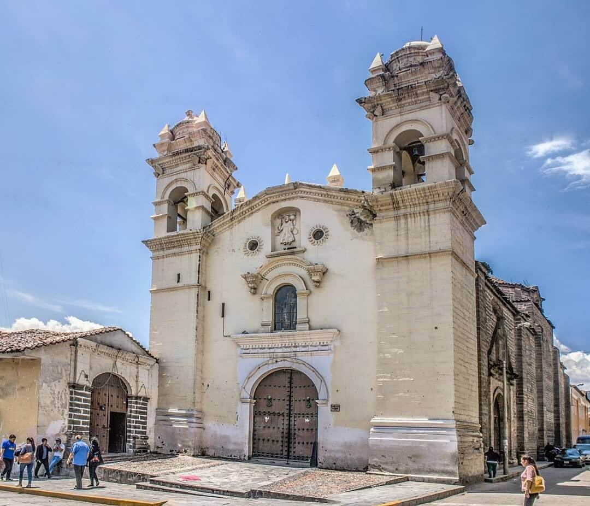
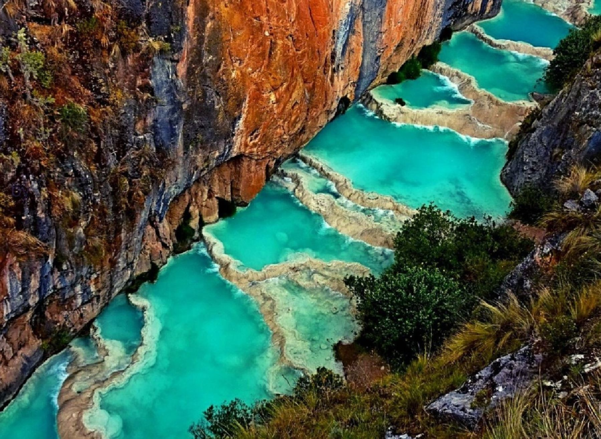
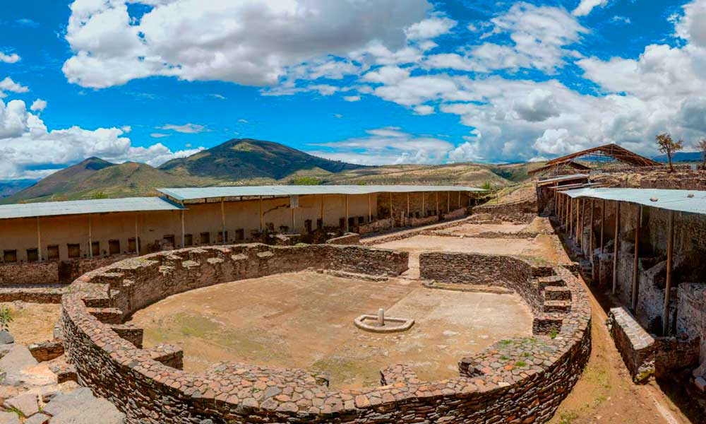

La ciudad de las 33 iglesias
Ayacucho, ubicada en el corazón de los Andes peruanos, es una ciudad rica en historia, cultura y tradiciones. Conocida como la "ciudad de las 33 iglesias", Ayacucho es un verdadero tesoro colonial que alberga impresionantes edificaciones que datan de la época virreinal.
Lugares que debes visitar:

Obelisco de Quinua: El Obelisco de Quinua, ubicado a pocos kilómetros
de la ciudad de Ayacucho, es un monumento conmemorativo que rinde homenaje a la victoria de Ayacucho en la
batalla del mismo nombre, un hito clave en la lucha por la independencia del Perú. Este imponente obelisco de
30 metros de altura está rodeado de un hermoso paisaje andino, ofreciendo vistas panorámicas que quitan el aliento.
En su base, se encuentran inscripciones que narran la historia de la batalla y la importancia de los héroes que lucharon
por la libertad. Además, la zona cuenta con un ambiente tranquilo, ideal para reflexionar sobre el legado histórico
de la independencia peruana.
Aguas Turquesas de Millpu: Las Aguas Turquesas de Millpu son un destino natural impresionante,
ubicado en la provincia de Huanta, cerca de Ayacucho. Este conjunto de piscinas naturales de un vibrante color turquesa se forma a
partir de manantiales de agua cristalina que fluyen a través de un paisaje montañoso. Las cascadas y pozas invitan a los visitantes
a disfrutar de un refrescante baño, rodeados de una exuberante vegetación y formaciones rocosas únicas. Millpu no solo es un lugar
perfecto para relajarse y disfrutar de la belleza de la naturaleza, sino que también ofrece oportunidades para el senderismo y la
observación de la fauna local, convirtiéndolo en un destino ideal para los amantes de la aventura.


Complejo Arqueológico Wari: El Complejo Arqueológico Wari es un sitio
de gran relevancia histórica y cultural, situado a aproximadamente 25 kilómetros de Ayacucho. Este antiguo
asentamiento fue una de las ciudades más importantes de la cultura Wari, que floreció entre los años 600 y
1100 d.C. El complejo cuenta con impresionantes estructuras arquitectónicas, incluyendo templos, plazas y caminos,
que reflejan el avanzado nivel de urbanismo de la época. La disposición de sus edificaciones sugiere un alto grado
de planificación y organización social. Los visitantes pueden explorar las ruinas y aprender sobre la influencia de
la cultura Wari en el desarrollo de civilizaciones posteriores en la región andina, convirtiéndolo en un destino
imperdible para quienes buscan comprender la rica herencia cultural de Perú.